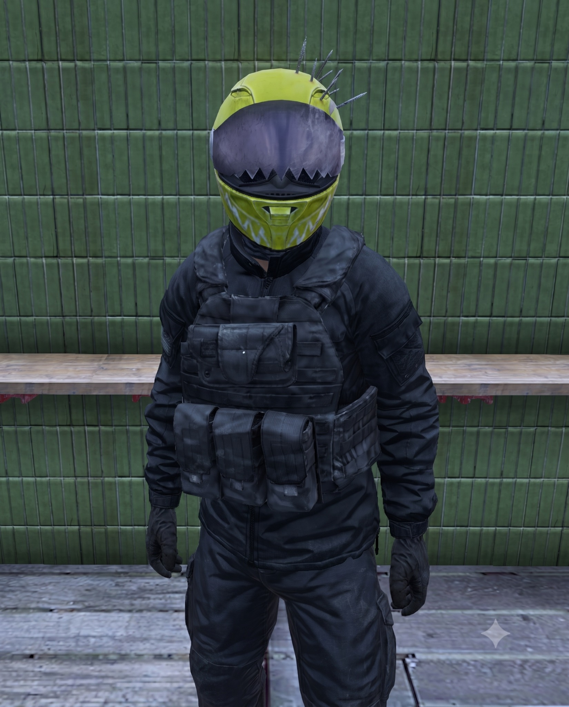

How the Market Works
- List your own items for other survivors to purchase.
- Choose the asking price for your listing.
- Pay a 10% listing fee when the item is placed on the market.
- Listings remain active for 7 days.
The server's player-driven marketplace. Pay No Name to list your own items for sale, set your asking price, and make them available for other survivors to purchase.
Current Player-to-Player listings pulled from the live Chernarus server and refreshed every hour.
Nobody seems to know his name, and he has never shown much interest in correcting that. Around Scorched Isle Market, survivors simply know where to find him when they have something valuable and would rather name their own price.
No Name does not buy your goods in the traditional sense. He rents you a place on his market, takes his commission up front, and lets the survivors of Chernarus decide whether your asking price is worth paying.
His rules are simple because he has no patience for arguments. The listing fee buys you a place on the market for the full listing window. Change your mind and you can take your property back, but the commission stays with him.
Forget about the listing entirely, however, and No Name becomes considerably less sentimental. When the clock runs out, abandoned stock goes straight to the scrap yard. No extensions. No recovery. No refunds.
No Name provides the counter. You provide the merchandise. The clock starts the moment he takes his cut.
